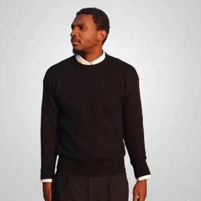

hardware, terrain, data center.
hardware, field service, data center.
ENYOLAB, mon lab hardware : cartes électroniques sous KiCad, bras robotisé LeRobot SO-101, edge AI sur Jetson Orin Nano.
Bac Pro MEI (Lycée Paul Belmondo) → BTS ATI (Lycée Jacquard) → Licence pro supply chain & maintenance industrielle (ISTELI) → MIT Professional Education (IA générative appliquée). 7 ans de terrain.
3e place, hackathon hardware OpenAI DevDay Exchange [2026]. Finaliste, European Hackathon League 2026, Grande Finale de Munich, équipe Pegasus. Habilitations BR / BC / B2V.
bring-up d’un cluster de serveurs Supermicro dans un data center IA/HPC. câblage fibre spine-leaf étiqueté From/To, racking, remplacement disques et RAM, sous procédures ESD.
schéma et routage sous KiCad, montage et soudure des cartes, essais sur banc hydraulique. projet perso, le week-end.
bras leader/follower monté, calibré et téléopéré. prochaine étape : collecte de démonstrations et politique d’imitation sur le bras réel.
deux postes de test (pneumatique/eau et électrique) remplacés par un seul banc. alimentation 230→24 V, circuit d’eau autonome avec purge. spécifié en APTE, conçu et construit pendant mon BTS. toujours en service six ans après. case study.
câblage et intégration physique du système iOptima de Bien-Air dans les fauteuils dentaires A-dec. montage, tests fonctionnels et installation en CHU, universités et cliniques.
Diffusion Policy sur PushT. à 100 démonstrations, 8 % → 19 % et 8 % → 22 % sur deux seeds ; aucun gain à 200. résultats.
ENYOLAB, my hardware lab: circuit boards in KiCad, a LeRobot SO-101 robot arm, edge AI on a Jetson Orin Nano.
Vocational bac in industrial maintenance (Lycée Paul Belmondo) → BTS engineering technician (Lycée Jacquard) → Bachelor in supply chain & industrial maintenance (ISTELI) → MIT Professional Education (applied generative AI). 7 years in the field.
3rd place, OpenAI DevDay Exchange hardware hackathon [2026]. Finalist, European Hackathon League 2026, Grand Finale in Munich, team Pegasus. French electrical clearances BR / BC / B2V.
bring-up of a Supermicro server cluster in an AI/HPC data center. spine-leaf fibre cabling labelled From/To, racking, disk and RAM replacement under ESD procedures.
schematic and layout in KiCad, board assembly and soldering, tests on a hydraulic bench. personal project, on weekends.
leader/follower arm assembled, calibrated and teleoperated. next: demonstration collection and an imitation policy on the real arm.
two test stations (pneumatic/water and electrical) replaced by a single bench. 230→24 V supply, self-contained water circuit with purge. specified with the APTE method, designed and built during my BTS. still in service six years later. case study.
wiring and physical integration of Bien-Air’s iOptima system into A-dec dental chairs. assembly, functional tests and installation in university hospitals, universities and clinics.
Diffusion Policy on PushT. at 100 demonstrations, 8 % → 19 % and 8 % → 22 % across two seeds; no gain at 200. results.